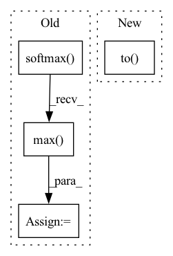

Pattern ID :3671

Before Change
with torch.no_grad():
y_u = model(x_u)
y_u_strong = model(x_u_strong)
confidence, pseudo_labels = (F.softmax(y_u, dim=1)).max(dim=1)
confidence = confidence.detach()
mask = (confidence > args.threshold).float()
self_training_loss = args.trade_off_self_training * (
F.cross_entropy(y_u_strong, pseudo_labels, reduction="none") * mask).mean()
After Change
pseudo_label_ratios],
prefix="Epoch: [{}]".format(epoch))
self_training_criterion = ConfidenceRegularizedSelfTrainingLoss(args.threshold).to(device)
// switch to train mode
model.train()
end = time.time()
In pattern: SUPERPATTERN
Frequency: 3
Non-data size: 4
Instances
Fragment ID: 13835851
Project Name: thuml/transfer-learning-library
Commit Name: 5553e65d6116e17432784e23337e7446cefa744e
Time: 2022-02-15
Author: 57670068+tsingcbx99@users.noreply.github.com
File Name: examples/semi_supervised_learning/image_classification/fixmatch.py
M Class Name: AnonimousClass
N Class Name: AnonimousClass
M Method Name: train(7)
N Method Name: train(7)
M Parent Class:
N Parent Class:
M File Name: examples/semi_supervised_learning/image_classification/fixmatch.py
N File Name: examples/semi_supervised_learning/image_classification/fixmatch.py
M Start Line: 180
M End Line: 185
N Start Line: 149
N End Line: 184
'>
Before Change
y_u = model(x_u)
y_u_strong = model(x_u_strong)
confidence, _ = F.softmax(y_u, dim=1).max(dim=1)
mask = (confidence > args.threshold).detach()
log_prob = F.log_softmax(y_u_strong / args.T, dim=1)
con_loss = args.trade_off_con * (F.kl_div(log_prob, F.softmax(y_u, dim=1), reduction="none").sum(dim=1))
con_loss = (con_loss * mask).sum() / max(mask.sum(), 1)
After Change
[batch_time, data_time, losses, cls_losses, con_losses, cls_accs],
prefix="Epoch: [{}]".format(epoch))
consistency_criterion = StrongWeakConsistencyLoss(args.threshold, args.T).to(device)
// switch to train mode
model.train()
end = time.time()
'>
Fragment ID: 13835850
Project Name: thuml/transfer-learning-library
Commit Name: 5553e65d6116e17432784e23337e7446cefa744e
Time: 2022-02-15
Author: 57670068+tsingcbx99@users.noreply.github.com
File Name: examples/semi_supervised_learning/image_classification/uda.py
M Class Name: AnonimousClass
N Class Name: AnonimousClass
M Method Name: train(7)
N Method Name: train(7)
M Parent Class:
N Parent Class:
M File Name: examples/semi_supervised_learning/image_classification/uda.py
N File Name: examples/semi_supervised_learning/image_classification/uda.py
M Start Line: 176
M End Line: 182
N Start Line: 146
N End Line: 179
'>
Before Change
// cross entropy loss with pseudo label
y_u = model(x_u)
confidence, pseudo_labels = (F.softmax(y_u, dim=1)).max(dim=1)
confidence = confidence.detach()
mask = (confidence > args.threshold).float()
self_training_loss = args.trade_off_self_training * (
F.cross_entropy(y_u, pseudo_labels, reduction="none") * mask).mean()
After Change
[batch_time, data_time, losses, cls_losses, self_training_losses, cls_accs, pseudo_label_accs],
prefix="Epoch: [{}]".format(epoch))
self_training_criterion = ConfidenceRegularizedSelfTrainingLoss(args.threshold).to(device)
// switch to train mode
model.train()
end = time.time()
'>
Fragment ID: 13835849
Project Name: thuml/transfer-learning-library
Commit Name: 5553e65d6116e17432784e23337e7446cefa744e
Time: 2022-02-15
Author: 57670068+tsingcbx99@users.noreply.github.com
File Name: examples/semi_supervised_learning/image_classification/pseudo_label.py
M Class Name: AnonimousClass
N Class Name: AnonimousClass
M Method Name: train(7)
N Method Name: train(7)
M Parent Class:
N Parent Class:
M File Name: examples/semi_supervised_learning/image_classification/pseudo_label.py
N File Name: examples/semi_supervised_learning/image_classification/pseudo_label.py
M Start Line: 175
M End Line: 180
N Start Line: 147
N End Line: 178